이곳에서 잠시
제주대학교 아라캠퍼스
산책캠퍼스
캠퍼스 산책
3D익숙한 캠퍼스를
새로운 시선으로.
숨결을 만나, 캠퍼스 이야기를 모아볼까요?

설치 없이, 편하게 걸어요.
어디부터 가볼까요?
3구역나의 산책
이 기기에 저장0곳을 걸었어요
0 / 3장소에 도착하면 도장이 남아요.
© OpenStreetMap contributors · 실제 지도에 기반한 3D 산책